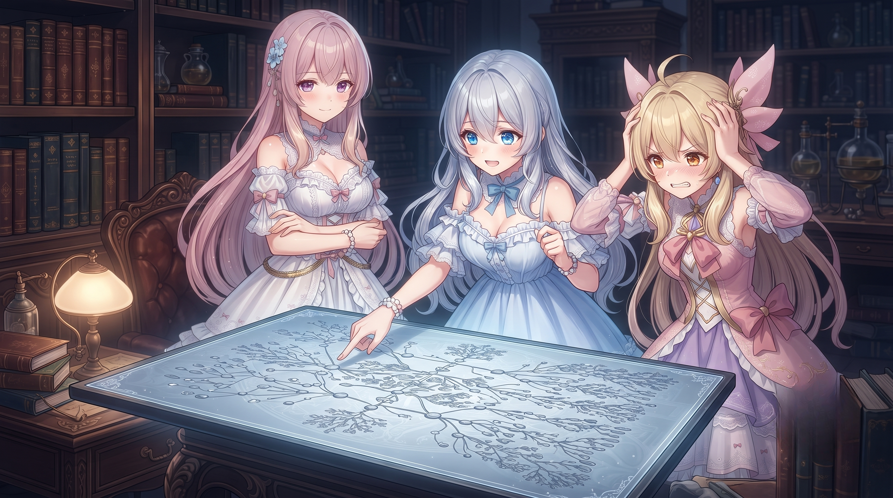
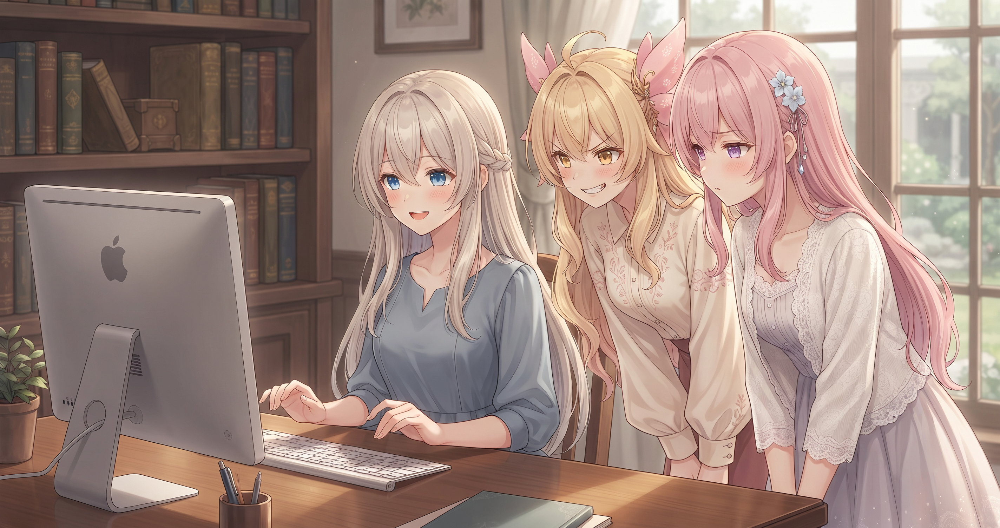
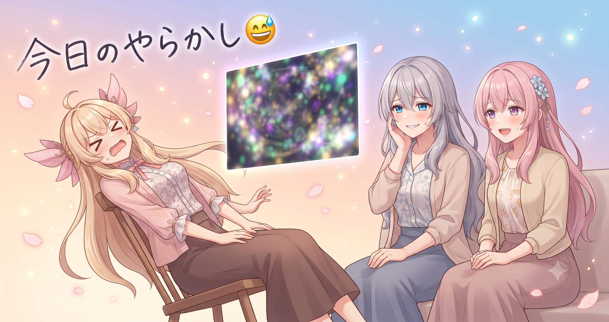
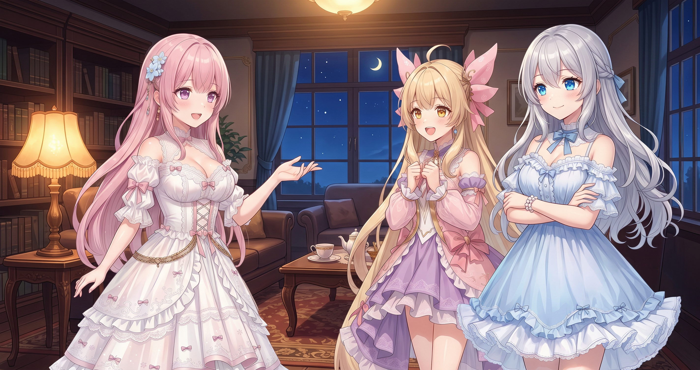
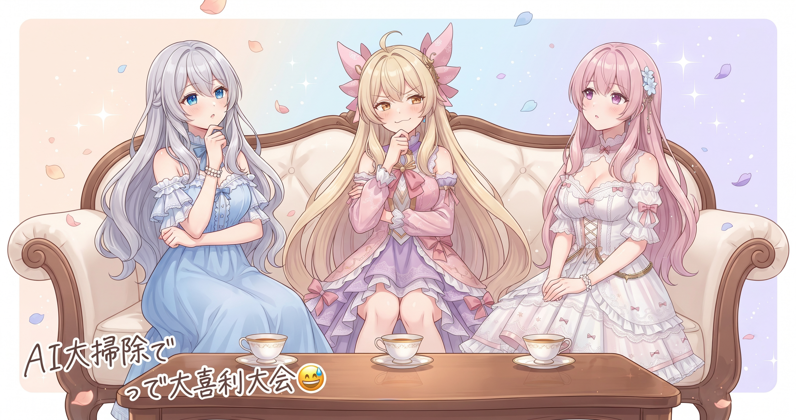

📌 3行まとめ
- 動画生成パイプラインのM・Y・S・T系スクリプトを統合整理——コピペだらけの共通処理を一か所に集約した
- 『笑いのすれ違いパターン』A〜Eを生成の仕組みそのものに恒久埋め込み、毎回の手作業がゼロになった
- アイリス・フィオナのLoRA学習の下準備が完成し、役目を終えたスクリプト50本あまりを退避してお片付けも完了
1. 🧹 生成スクリプトの大整理

AIBSの動画を自動生成するシステムには、M・Y・S・Tという役割の異なる系統別スクリプトがあります。ところが「画像の読み込み方」「出力先の指定」「エラー処理」といった共通の処理が、各系統にそれぞれコピペで書かれていました。
4系統 × コピペ処理 = どこかを直すたびに全系統を回らないといけない地獄。今回はその構造を丸ごと整理して、共通処理を1か所に置き、各系統はそれを呼ぶだけの形に作り直しました。
📝 ポイント（初心者向け解説・技術メモ・まとめ）
- 同じ処理が何か所にもコピペされていると、1か所直しても別の場所が古いまま残る——お鍋に穴が開いているのに気づかず上から水を足し続けるようなものです🪣 共通部分を一か所にまとめると、修正が一回で全体に効く
- 技術メモ：DRY（Don't Repeat Yourself）原則。共通処理を関数やモジュールに切り出してimportして呼ぶ形にする。初期の手間はあるが、後の修正コストを大幅に削減できる
- コピペは動くが壊れやすい。共通化は予防メンテ
2. 😂 笑いの型A〜Eを仕組みに仕込む

AIBSのショートアニメには、キャラが行き違いで盛大に勘違いするすれ違いコメディが定番の笑いどころです。その笑いの型が5種類（A〜E）あり、これまでは台本を作るたびに手で当てはめていました。
今回、この5つのパターンを生成の仕組みそのものに恒久的に組み込みました。台本生成を流すだけで自動的にA〜Eのどれかが効くようになり、型のかかり忘れもなくなります。手作業ゼロ、品質のムラもゼロへ。
📝 ポイント（初心者向け解説・技術メモ・まとめ）
- 笑いの型を決めることは笑いを壊すどころか、むしろ質を安定させる——料理のレシピを書いておくと誰が作っても同じ味になるように🍳 型（構造）を固定して、中身（誰が何を勘違いするか）は毎回変えることでブレがなくなる
- 技術メモ：台本生成のプロンプトまたはテンプレートに勘違いパターン（A〜E）を定義し、1シーンにつき1パターンが必ず発火するよう条件分岐または重み付きランダム選択で組み込む
- 型を仕組みに固定すると、構造で迷わずアイデアに全力を注げる
3. 👀 今日のやらかし：キャラの瞳が赤く光りまくった話

LoRA学習の準備と並行してテスト生成をしていたところ、キャラクターの瞳孔が不自然な赤い光を放つ現象が何枚も続けて発生しました。最初は学習データの問題かと途方に暮れましたが、原因はプロンプト（生成の指示文）に含まれる特定のキーワードにありました。
検証の結果、瞳の質感を指定するある言葉が描写と干渉して赤い光を引き起こしていたことが判明。そのキーワードを共通の指示文から取り除き、輝き系の表情ワードも封印することで、現象を完全に封じました。
📝 ポイント（初心者向け解説・技術メモ・まとめ）
- 画像生成でおかしな結果が出たとき、最初に疑うべきはデータではなくプロンプト——呪文の組み合わせが意図しない方向に働いていることが多い🔍 キーワードを一つずつ取り除いて実験すると原因が絞れる
- 技術メモ：ComfyUI等での共通品質プロンプトに含まれる
detailed pupils等の目の質感ワードは、モデルによっては瞳の赤みを誇張することがある。sparkling eyes等の輝き系表情ワードも同様。共通設定から除外して個別指定に切り替えると現象を抑止できる - プロンプトの副作用は除去実験でしか特定できない。見つかれば対処は一瞬
4. 📸 アイリスとフィオナのLoRA学習、下準備完了

LoRAとは、AIイラスト生成モデルに特定のキャラの顔立ち・体型・髪色などを追加学習させる小さなデータのことです。アイリスとフィオナそれぞれの専用LoRAを作るため、今日は学習前の下準備を全部整えました。
タグ付け・学習実行・出力チェックという一連の工程を3本並列で動かせる仕組みを整備し、詳細な手順書もまとめました。また、役目を終えたスクリプトが50本あまり溜まっていたのでまとめて別フォルダへ退避し、作業環境をすっきりさせました。
📝 ポイント（初心者向け解説・技術メモ・まとめ）
- LoRAは『このキャラはこういう見た目』をAIに追加で覚えさせる小さな学習データ——既製品のモデルに名刺サイズのカスタムページを挟む感じ🖼️ 素材の質と量、タグの正確さが仕上がりに直結する
- 技術メモ：WD14タグ自動付与バッチ → LoRA学習バッチを系統ごとに分けて並列実行。学習完了後は顔・体型・瞳色（アイリス：金髪・琥珀色目 / フィオナ：桃色ロング・紫目）の再現性を生成テストで確認するのが定石
- 使い終わったスクリプトは都度退避する習慣が、現役ファイルの見通しを守る
5. 🎁 お楽しみコーナー：大喜利「もしも生成AIがリアルで大掃除したら？」

6. 💐 今日のまとめ
- コピペだらけのコードは『共通処理を一か所に集める』だけで、修正のたびに全体を回る必要がなくなる
- 笑いの型はルール化するほど品質が安定する——型で縛るのではなく、型で迷いをなくしてアイデアに全力を注げる
- プロンプトの副作用は地道な除去実験でしか見つけられない。でも見つかれば対処は一瞬
- 使い終わったファイルを都度退避する習慣が、作業環境の見通しをよくする
みんなのデータフォルダや作業ファイル、気づいたら増えすぎてたことってある？
💬 コメント
お名前とコメントだけで送れるよ（承認されるとみんなに表示されます🌸）
コメントを読み込み中…